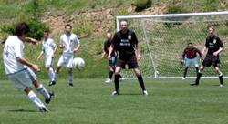

|
ALT East Japan tournament. Sugadaira, Nagano, Weeked 14th & 15th June,
PHOTOS: GALLERY1, GALLERY 2
Day 1 - Chiba Libra tip scales in their favour…
“Goddam and gee wiz goddammit! Why don`t you open them ears and get to doin` what I bin tellin` ya to get and get doin`, you goddam chicken-livered, limey-assed schmuck chuzzler!” screamed Beardface. “It’s time to get running somewhere and get doin` something! You hear me now – RUN SOMEWHERE AND DO SOMETHING!” As I watched the gruesome spectre approach, the gingery-auburn facial hair began to move and flicker, smouldering and then catching light. Soon, the flames were licking up around the head band. His head was fully on fire. From within the fiery head emerged a tiny-yet-perfectly-formed gingery-auburn beard.
“Is it this one?” growled the demon.
The undersized beard shimmered in the moonlight but for a few seconds, before becoming dust and falling to the ground. A second tiny-yet-perfectly-formed gingery-auburn beard followed the first, glistening mysteriously.
“Is it this one?” growled the demon.
The diminutive whiskers shimmered and fell to the ground as the first, after which a third, just the same as the previous two, emerged in the same manner.
“Is it this one?” growled the demon.
A fourth and then a fifth followed further, by which time I couldn`t breathe for the choking grip he had on my throat. “Is it this one? Is it this one? Is it….”
“AJ, wake up! Is it this one or not?” cried Stui from the driver`s seat. A sore throat and a dry tongue told me that I had nodded off in the back and was now being asked for navi advice. Trying to shake the last remnants of the nightmare from the memory, thoughts turned to the days ahead. 2 days of footie in the sun. Footie, sun, girls of a kind, beards, headbands, classic comedy moments, and Dave`s Blue Ice Roadshow Disco to boot. Perfect.
Rex was making his seventh? trip to Nagano, and the first in a while that he wasn’t defending champion. Other firsts were the presence of Stui, Peter and Ken from Sala. Brookie had fixed a defender, an Italian, Flavio, whom he had never met but only communicated with by telephone.
“Are you fit?” Brookie had asked.
“Am I what? he replied.
“Are you fit?” he asked again.
“Am I what? Am I fat?” came the reply.
In any event, getting everybody to the ground before kick-off was another pleasing first.
Conditions were great. Blue sky, some wispy cirrus here and there, but a cooling breeze that made the sun’s strength deceptive. Definitely a day for sunscreen. Chiba`s first game was against Dasai-O, who they had thrashed 9-nil in the previous autumn tournament, with Sid getting a hattrick. They were marginally more organised this year, as Chiba managed 5. Dhugal got 2, one a left foot lash, the other not, Toby took one round the keeper, Sam nonchalantly put one over the keeper, and Brookie one off a slide-rule through pass from Dhugal, Dhugal tells me.
Game 2 was against Gaspanic, probably the toughest game against a mix of Hibs and Geckoes and probably some others. They certainly won first place for most vocal manager. Long and loud he was – “Go fellah, yeah fellah, nice fellah!”. After about 10 minutes with the score nil-nil, Toby unleashed a seemingly unstoppable drive into the top left corner. Only a brilliant save by Hibs No.1 Hitoshi Ono in goal kept the scores level though. Many more chances came and went for Chiba, but none fruited. Nil-nil result.
Game 3 Tochigi. This game was notable for Toby`s extraordinary half-time team talk. Struggling to focus, he gathered his wits together, yet seemed incapable of taking two players off and putting two on. He conjured names as if from a hat, and tried vainly to meddle with the mountain spirits. Finally, he had to concede defeat and admit that he didn’t know what he was talking about. Curious business that altitude sickness. The game was also notable for the number of offsides Chiba were found guilty of – a tournament-record fifty seven in the first half alone.
For the last game of the day Chiba moved over to the main pitch to play the British Embassy. Dhugal headed one in, Toby got another from a half-volley, and then Ian, starting from just outside his own box, passed up the middle. It went wide to Lenny on the left who held it up and weaved a bit of magic. In the meantime, Ian had sprinted 50 metres upfield and received the ball back from Lenny. He charged into the penalty area where he was brought down by a desperate keeper. Penalty and goal. 3-nil Chiba.
There was another shocking first at this year`s tournament. It can be revealed that there was observed an openly public display of homosexual gayness between two men. As Dasai-O played Gaspanic, two Nagano players were seen to be engaged in a `love hug`, one entombed between the taut thighs of the other.
Not only that, but the `giver` was also observed to be nibbling the lobes of his chum. Whilst we must remain fair and charitable to our sick menfolk, we must also hope that this kind of homoerotica does not and can not become the norm. Stroking eachother`s gingery-auburn beard and adjusting eachother`s headband is one thing, but lobe-nibbling is entirely another, and I`m sure we all agree that this kind of perversion must never become the norm.
Any hopes of a dinner menu at least slightly at variance with the previous six years were dashed upon entering the dining hall. It seems that the produce of Nagano is of a singularly uniform nature in the month of June, such that one seems only to be served hambaagu with 3 soggy fries, fried fish, a potatoey kuroketto, some strands of pasta, soba, a wedge of grapefruit and rice. Quite singular indeed.
Still, we were all staying in the Hotel Yamabiko which meant we didn`t have far to go for the ALT discotheque. Actually, it was still too far for certain members of the team.
Flavio headed for a lie down after dinner and slept for 14 hours. Price just about made it to the bar for beers but swiftly reconvened in the traditional convention area. And there were late reports of Tequila abuse too. General intelligence is sketchy, but Dhugal confirmed that his thongs kept sticking to the floor as he tried to shake his moves, so we can gather that it was much like other years…bloody awful.
What would day 2 bring?
Day 2
It seemed that there weren’t too many casualties from the discotheque the night before, apart from some tequila jiggery-pokery, but Chiba had picked up a fair smattering of injuries from the football. Brookie had a twinge, Scott was partially lame, Sid was geriatric, Sam was out after popping a nut, Ken had actually travelled to Nagano with a broken rib, Flavio had a sore calf, Lenny was feeling tender in the loin area, and Pete had the weakest excuse of all – something about reconstruction surgery on snapped ligaments. A sorry bunch
Chiba had qualified in 3rd place which gave them a bye into the last 8, and their first game Sunday was the respectably timed 9.55 kickoff against Yamanashi.
Yamanashi. Japan’s wine growing capital and not known for football. Scott got the first, having an age in the box to calmly slot home. Lenny had the second which was a classic. He called for it from Masa wide on the left (how unusual), was approached by an opposing player whom he swiftly skinned in flamboyant Lennyesque style – feint right, tap left and go – and crossed the ball high, high, high into the box, over the floundering keeper and into the net. Oh how they cheered from the sidelines for that one. The third was undoubtedly Chiba`s goal of the weekend. Somewhere near the halfway line, left again, Brodders threw in to Lenny who passed to Scott in the middle who gave it back to Lenny.
Pleased with the aesthetic value of the play, Lenny gave it back to Scott who knocked it off to Shig. Shig shifted play to the right and passed to Flavio at right back. Flavio fed to Brookie on the right who then passed back inside to Shig. The Shig found Scott again in the middle who hit it wide and deep to Masa on the left. By this time, Brodders had walked to the box and was loitering somewhere in it. Masa crossed and Brodders shanked it into the goal. 3-nil. And if you didn`t have a hand in that goal, you should ask yourself why not, and then some other searching questions and then do some hard thinking. The 4th came from a handball. Brookie put the penalty soundly passed the keeper. 4-nil at half time.
Toby`s inspirational halftime talk and changes saw Price and Lenny move up front, the struggling Scott go off, and an almighty hissy fit from Brookie. After all the fuss, Chiba took the field for the second half with only 10 men. And despite keeping the ball for eons at a time, they failed to score again. Yamanashi, however, got two to round it out 4-2.
The semi-final was against Osaka Real, perhaps the dark horse of the tournament. They had put out the Gaspanic Hibs/Geckoes team in the quarters. After about 10 minutes with the score nil-nil, a moment of Lenny madness at the back had him bring down one of their players in the box for a penalty. Sid, fearless though fragile, brought all his sixty years of practical experience to bear on the problem, and manufactured a magnificent save to keep Chiba in the hunt. After the first half, it was a cagey nil-nil. Anyway, nil-nil with a few minutes to go when Dhugal took a pass in the box. He stopped, readjusted his footing, withdrew a fountain pen from his sock, bent down and marked his initials on the ball, and calmly slotted it past the keeper, to the immense relief of hundreds of fans supporting Chiba from their beds. The joy was short-lived, as a minute later Shige twisted his ankle and ruled himself out of the final game.
And so it came to be that Rex and Chiba Libra limped and battled to another Nagano final. They have never failed to do this in seven attempts and that is worth some self-plaudits surely. But over to the main pitch for the Kanto Celts.
Chiba started the tournament as a stout body of men, and had now become limp bodies of men. With Shige and Sam unable to walk, Scotty and Flavio limping, Brookie grasping the hamstring, Sid just being Sid, Ken broken, Lenny`s loin strapped, and who knows what other stuff, it looked a difficult task. And in fact it was. Overall, Celts were a bit more physical in the challenge and generally looked hungrier for the ball. Midway through the first half, an ocean of space on the left let the Celts through for the only goal of the game. Chiba fought on and had some chances of their own, but no cigar. It was pretty even stuff for the most part, but at the end it did feel as if Chiba somewhat crawled over the finishing line. I think we can say that the Celts were the deserving winners
So another tournament come and gone, and although there was no winner`s trophy for Rex, he did feel as though it had been a thoroughly enjoyable weekend, which is why it`s worth remembering that tournaments (especially this one) are principally about fun and enjoyment. Whatever comes next is largely personal, but when the sun shines in Sugadaira, you have to say it`s tricky to beat.
Due to the swift departures there was no Man of the Tournament award. Special mentions go to the usual suspects. I thought Ian and Guido were solid both days, Toby and Brookie did well, and Shige was himself. Sunburn of the Tournament goes to P Swinney for cultivating 3rd degree burns to his shins. It must also be said that even though we were second in the football, we were definitely first in the quality of female support. Beautiful and bravo. It made a great change from the pale, bloated, great, girt, monstrous Texan heifers that one normally sees on the sidelines at this tournament.
 Roll of Honour to Stui Anderssohn, who worked magic to sort the transport. Selflessly sacrificed himself, if such a thing is possible, into doing the shuttle runs aswell. And Roll of Honour Ludorum goes to Broderick Charles for getting us there.
Roll of Honour to Stui Anderssohn, who worked magic to sort the transport. Selflessly sacrificed himself, if such a thing is possible, into doing the shuttle runs aswell. And Roll of Honour Ludorum goes to Broderick Charles for getting us there.
And so, the “quotes”:
“For some reason, I seemed to get drunker and drunker and drunker as the night wore on.” B Charles
“Would you like some more sausage with that sausage?” S Thompson after entering the onsen. It was busy.
“Go fellah go!” Gaspanic`s manager coach. Very energetic.
“I was linking it altogether and running the show.” S Brooke-Smith (although it was generally agreed that he was actually limping forever and ruining the show)
“I’m reading a book at the moment called `Salmon fishing in Yemen`. It’s about salmon fishing in Yemen.” B Charles
“But are you any good on the skin trombone?” D Bedingfield
“So is Lenny playing the full twenty minutes up front? It`s a question, it`s a fucking question! Hmph!!” S Brooke-Smith
“I got seven assists today.” L Tui
“Aw feck noo!” S Anderssohn after driving around Tokyo for 20 minutes only to end up back at exactly the same place.
“There are a lot of smokers on this team.” Guido searching for areas of improvement.
“And whose favourite joke is that?” B Charles
“No comment.” Shig
“Anyone got a meal ticket?” Half the team
Finally, please understand that this has been a work of fiction, and as such I have allowed myself certain rights and liberties with regards to people, places, events and times. Why let truth stand in the way of a story…
Report by AJ Price
|